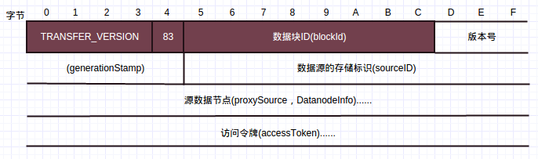

Hadoop版本:Hadoop-1.2.1
参考：《Hadoop技术内幕-深入解析Hadoop Common和HDFS架构设计与实现原理》
本文讨论HDFS中的流式接口，主要用在客户端-数据节点，数据节点-数据节点之间的数据读写(包括复制，数据块恢复等)，名字节点-第二名字节点之间的fsimage和editLog文件的获取。在这些情况下，涉及到大量数据的传输，不适合使用RPC来进行通信，RPC主要应用于小数据的方法调用场景。
因此，数据节点，名字节点和第二名字节点都开放了流式接口，用于相关数据访问。
说明: 本文大部分内容来自于技术内幕P245-P254。
1. 数据节点上的流式接口
数据节点负责实际数据块的读写:将HDFS文件数据写到本地文件系统的文件中，或者从本地文件系统文件中读取HDFS文件数据。除了数据块的读写，数据节点还支持数据块替换，数据块拷贝和数据块检验信息读取等基于TPC的接口。这些操作基于TCP字节流，没有消息边界的概念，因此每个操作都对应一个帧结构，帧结构中包含标识该操作的操作码。
数据节点流式接口的操作码定义在DataTransferProtocol接口中1
2
3
4
5
6
7
8
9
10
11
12
13
14
15
16
17
18
19
20
21public interface DataTransferProtocol {
//接口版本号
public static final int DATA_TRANSFER_VERSION = 17;
//操作码
public static final byte OP_WRITE_BLOCK = (byte) 80;
public static final byte OP_READ_BLOCK = (byte) 81;
//截止版本号15，OP_READ_METADATA不再支持
@Deprecated public static final byte OP_READ_METADATA = (byte) 82;
public static final byte OP_REPLACE_BLOCK = (byte) 83;
public static final byte OP_COPY_BLOCK = (byte) 84;
public static final byte OP_BLOCK_CHECKSUM = (byte) 85;
//操作码对应的状态码
public static final int OP_STATUS_SUCCESS = 0;
public static final int OP_STATUS_ERROR = 1;
public static final int OP_STATUS_ERROR_CHECKSUM = 2;
public static final int OP_STATUS_ERROR_INVALID = 3;
public static final int OP_STATUS_ERROR_EXISTS = 4;
public static final int OP_STATUS_ERROR_ACCESS_TOKEN = 5;
public static final int OP_STATUS_CHECKSUM_OK = 6;
如上，除了操作码外，还定义了操作码对应的状态码。
1.1 读数据
读数据就是从数据节点上的某个数据块读取部分数据，操作码为81。
1.1.1 读数据请求
读数据请求帧结构如下:
按照先后顺序，字段分别代表的含义如下:
TRANSFER_VERSION，接口版本号81，操作码，读请求操作码为81数据块ID，请求数据块的ID，对应Block的成员blockId，long型整数版本号，或者说时间戳，对应Block的成员generationStamp，long型整数偏移量，数据块内的偏移量，从该偏移量处开始读取数据，long型整数数据长度，要读取的数据长度，long型整数客户端名字，标识请求的客户端，字符串，一般先输出字符串编码后长度，然后是字符串编码的字节数据访问令牌，安全相关，字符串
如上，请求开始会发送接口的版本号和请求的操作码，读数据请求操作码为81。通过blockId和generationStamp来确定请求读取的数据块Block，根据偏移量确定从Block中开始读取数据的位置，根据数据长度确定要读取的数据长度。
读请求的响应包含一个应答头和一系列的数据包。
首先发送应答头
1.1.2 读请求响应应答头
应答头的帧结构如下:
按照先后顺序，字段分别代表的含义如下:
- 操作的返回码，成功时为
OP_STATUS_SUCCESS(0) - 数据校验类型，目前支持CRC-32(1)和不进行校验(0)两种方式
- 校验块大小，一般来说为512，即源数据512字节生成4字节的校验和
- 偏移量(可选)，发送的响应数据在请求数据块中的实际偏移量
如上，首先是2个字节的操作状态码(成功或其他)，然后是1个字节的校验类型，为1时使用CRC-32校验，同ChecksumFileSystem类似，源数据的每个校验块(一般512)生成4个字节的校验和，用于验证数据的正确性，所以接下来的8个字节为校验块的大小(一般为512)。
最后8个字节为数据节点发送的在请求数据块中的实际偏移量，该偏移量可能与请求的偏移量不一致，主要是因为校验计算。如果客户端请求一个区块的200-512区间的数据且使用了校验和，那么为了验证该区间数据的正确性，需要将0-200区间的数据也发给客户端，这样响应头的最后8个字节实际偏移量便为0，与请求的偏移量不一致。
应答头之后便是一个或多个的数据包
1.1.3 读请求响应数据包
读请求响应的数据包帧格式如下:
按照先后顺序，字段分别代表的含义如下:
包长度，该数据包的长度，包含”len+checksum+data”长度，即”实际校验数据+实际数据”长度+4偏移量，与应答头的偏移量对应，该包第一个字节数据在数据块的偏移量顺序号，包的序号tail，是否为最后一个包数据长度，包中实际的源数据长度校验数据，源数据对应的校验数据，根据数据长度以及响应头的校验块大小可以计算校验数据长度，从而读取到校验数据数据，源数据，读完校验数据后，根据数据长度便能读取到源数据
1.2 写数据
数据的写操作是通过数据流管道完成的
如上，对应3个备份的情况，客户端往DataNode1发送数据包，然后由DataNode1推送接收到的数据到DataNode2，DataNode2推送到DataNode3，这样可以充分利用集群中每一台机器的带宽，避免网络瓶颈。接收确认时，从DataNode3反向返回，直到Client接收到确认。
1.2.1 数据写请求
写请求的帧结构如下:
- 与读数据请求类似，首先是接口版本号和操作码，写请求操作码为80；然后是写的Block ID和generationStamp，标识该Block；写数据没有偏移量字段，只能往数据块后面添加数据，而不能修改已经写入的文件内容。
pipelineSize为整个数据流管道的大小，如上为3；isRecover标识是否为数据修复过程；- 如果数据来源是客户端，则写客户端信息，
hasSrcDataNode标志为false，没有srcDataNode字段；
否则如果数据来源是数据节点，即执行数据复制，则客户端信息字段为空，同时hasSrcDataNode标志置位，紧接着是包含数据来源的数据节点序列化结果； targets是目标列表，numTargets为列表大小。
当numTargets为0时，表示当前数据节点为数据流管道的最后一个节点，不需要继续推送到其他数据节点；
如果numTargets大于0，那么数据目标列表中的第一项即为当前数据节点的下游数据推送目标；- 访问令牌与安全相关，
DataChecksum包含数据校验信息，与数据节点读应答应答头一致，包含校验方式和校验块大小；
以上面的例子为例，DataNode1接收到Client的写请求时，client字段存在，hasSrcDataNode为0，不存在srcDataNode信息。numTargets为2，targets包含DataNode2和DataNode3的信息。DataNode1会建立到DataNode2的连接并发送接收到的数据。
DataNode2收到DataNode1的写请求时，client字段为空，hasSrcDataNode为1，srcDataNode为DataNode1的信息。numTarget为1，targets包含DataNode3的信息。DataNode2会建立到DataNode3的连接并发送接收到的数据。
DataNode3收到DataNode2的写请求时，client字段为空，hasSrcDataNode为1，srcDataNode为DataNode2的信息。numTargets为0，DataNode3得知自己为最后一个节点，不会继续建立连接。
1.2.2 数据写应答
写请求有相应的应答，应答会从管道的最后一个数据节点开始(如上DataNode3)，往客户端方向发送，管道上每一个节点都会等待这个应答，收到应答后，才会开始接收数据。也就是说，客户端会等待管道完全建立收到应答后，才会开始发送数据。
应答帧格式如下:
接收到应答之后，发送端发送一个或多个数据包，数据包格式与读请求应答一样，见[1.1.3]
管道上下游节点接收到上游节点发送的数据包后，会给上游节点发送该数据包的确认包。确认包是DataTransferProtocol.PipelineAck序列化结果1
2
3
4
5
6
7
8
9
10
11
12
13
14public static class PipelineAck implements Writable {
private long seqno;//包序号
private short replies[];//应答
final public static long UNKOWN_SEQNO = -2;
public void write(DataOutput out) throws IOException {
//WritableUtils.writeVLong(out, seqno);
out.writeLong(seqno);
out.writeShort((short)replies.length);
for(short reply : replies) {
out.writeShort(reply);
}
}
...
如上，PipelineAck包含两个成员属性:seqno和replies。seqno是该确认包要确认的数据包序号，replies包含了管道上各个节点上对该数据包的处理结果，成功为OP_STATUS_SUCCESS，失败为OP_STATUS_ERROR，随着确认包的逆流而上(DataNode3->DataNode2->DataNode1->Client)，replies字段不断增长，最终Client接收到后判断replies数组是否全为OP_STATUS_SUCCESS来判断该包是否已经成功被接收。
replies中的处理结果，首先是下游节点的处理结果，然后是下游节点的下游节点处理结果，以此类推。如Client收到的replies中，replies[0]是DataNode1的操作结果，replies[1]是DataNode2的处理结果。
均衡器使用数据块替换和数据块拷贝接口，在数据节点间移动数据块，以平衡数据节点的负载
1.3 数据块替换
数据块替换用于将某个数据节点上的数据块移动到另外一个数据节点，原数据节点上的数据块在成功复制到目标数据节点后，会被删除，该请求由均衡器发往目标数据节点。数据块替换请求帧格式如下:

前面4个字段意义现在已经很明显了。sourceID为数据源的存储标识，数据块替换操作成功后，执行操作的节点使用这个标识，通过DatanodeProtocol.blockReceived通知名字节点，删除名字节点上源数据节点拥有的，被替换数据块的响应记录，并进一步通过名字节点指令，删除源数据节点上的数据块。
源数据节点包含了源数据节点的信息。
数据节点执行数据块替换请求的过程中，将源数据节点上的数据复制到目标数据节点，是由数据块拷贝完成的。拷贝完成后，最后会读取一个标识对端发送完的字节，然后发送替换操作的执行状态给对端作为响应。
1.4 数据块拷贝
数据块拷贝，本质就是一个读操作，由于拷贝针对整个数据块，所以不需要读请求帧的一些字段。数据块拷贝的应答，采用了和读操作应答一样的流程，即应答包含一个应答头和若干应答包。不过数据块拷贝为整个块拷贝，因此可选偏移量不存在。
数据块拷贝请求帧格式如下:
操作码为84。
1.5 读数据块校验信息
读数据块校验信息读取的是整个数据块校验文件的MD5摘要，请求帧格式如下:
操作码为85。该请求的应答如下:
2. 名字节点和第二名字节点上的流式接口
名字节点和第二名字节点上的流式接口用来通过HTTP get fsimage和editlog文件。
名字节点管理的文件系统元信息保存在fsimage中，不过并不是每次操作都写到fsimage中，而是保存在editlog即编辑日志中，当名字节点从错误中恢复时，通过fsimage和editlog便能恢复到错误前状态。
第二名字节点周期性的获取HDFS中的editlog大小，如果超过了某个大小(通过配置)则需要将edit合并到fsimage中。此时第二名字节点便通过名字节点的HTTP服务通过get方法获取fsimage和editlog文件，此时在名字节点上editlog保存下来发送给第二名字节点，并启用一个新的editlog文件记录改变。第二名字节点获取到fsimage和editlog后进行合并，合并完成通知名字节点取回。这时名字节点通过第二名字节点的HTTP服务由get方法获取合并的新的fsimage文件并替换掉原来的fsimage文件。
如上分析，名字节点命名空间镜像fsimage的HTTP地址为:1
http://<名字节点地址>:<名字节点HTTP端口>/getimage?getimage=1
编辑日志editlog的HTTP地址为:1
http://<名字节点地址>:<名字节点HTTP端口>/getimage?getedit=1
合并后新命名空间镜像，名字节点通过以下地址获取:1
http://<第二名字节点地址>:<第二名字节点HTTP端口>/getimage?getimage=1
第二名字节点在合并数据准备好时，通过发送一个HTTP请求，通知名字节点获取新的fsimage，请求的形式如下:1
http://<名字节点地址>:<名字节点HTTP端口>/getimage?putimage=1&port=<第二名字节点HTTP端口>&machine=<第二名字节点地址>&token=<CheckpointSignature信息>
该请求只是一个通知，不会传输大量的数据。
由于Java已经提供了对HTTP协议的封装，使得名字节点，第二名字节点上下载数据的过程显得非常简单。节点上的HTTP客户端使用了协议处理器，处理模式为HTTP的URL，最后获取输入流获取数据，如下:1
2
3
4
5
6...
URL url=new URL(str.toString());
...
URLConnection connection=url.openConnection();
InputStream stream=connection.getInputStream();
...
Hadoop各个节点都内嵌了Jetty，这是一个轻量级，基于标准，开源并且具有丰富功能的Web容器，他实现了Java的HTTP Servlet规范。HTTP Servlet是Java Web技术的核心基础，它简化了Web应用的开发和部署，开发人员只需要关注具体的业务逻辑，而把协议处理等细节交给HTTP Servlet的运行环境:Web容器。名字节点和第二名字节点提供的数据下载功能，就是通过运行在Jetty的HTTP Servlet实现的。该Servlet通过上述HTTP地址中的参数，如”getimage=1”等，将对应的文件数据通过HTTP协议，发送到HTTP客户端。